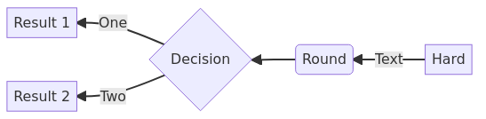
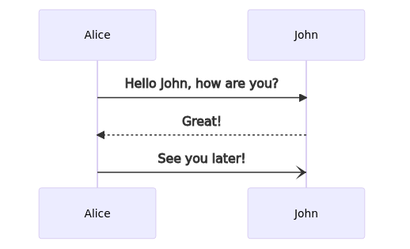
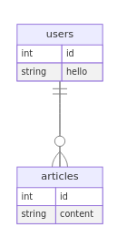
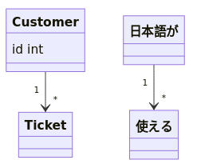

Mermaid
概要
Mermaidはテキストで作図するためのライブラリ。JavaScriptで実装されている。
Emacsのorg-modeで実行できるようにしていて、これがめちゃ便利。Dockerで設定してるいるので、依存もない。
Memo
例
flowchart LR
A[Hard] -->|Text| B(Round)
B --> C{Decision}
C -->|One| D[Result 1]
C -->|Two| E[Result 2]

flowchart RL
A[Hard] -->|Text| B(Round)
B --> C{Decision}
C -->|One| D[Result 1]
C -->|Two| E[Result 2]

sequenceDiagram
Alice->>John: Hello John, how are you?
John-->>Alice: Great!
Alice-)John: See you later!

flowchart TB subgraph GHA a1(ビルド) end subgraph GHP p1(HTML) end subgraph GHCR cr1(image) end GHCR -- Image Pull --> GHP GHA -- Image Push --> GHCR

sequenceDiagram
autonumber
actor お客様
participant form as 申し込みフォーム
participant s3 as 申込書補保管S3
participant admin as 管理システム
お客様->>form: サービス申し込み
Note left of form: 申込書
form->>s3: 申込書保存
Note left of s3: 申込書
form->>お客様: 受付処理中連絡
s3->>s3: FSSによる申込書マルウェアチェック
s3->>admin: 申込書マルウェアチェック完了通知
admin->>s3: 申込書取得リクエスト
s3->>admin: 申込書取得レスポンス
Note left of admin: 申込書
admin->>admin: 申込書バリデーションチェック
admin->>admin: 申込情報登録
admin->>お客様: 受付完了連絡

sequenceDiagram autonumber Client->>+Server: GET /issues Server--)Server2: 非同期リクエスト Server-->>-Client: response loop Server2-->Server2: なにかしら Note right of Server2: 処理が完了しなくても<br/>10秒で強制終了する end

erDiagram
users{
int id
string hello
}
articles{
int id
string content
}
users ||--o{ articles: ""

クラス図ではなぜか日本語が使えるので、ER図を書くときもこっちのほうがよい。
classDiagram
class Customer{
id int
}
Customer "1" --> "*" Ticket
日本語が "1" --> "*" 使える

同じコードで別の形式にエクスポートする例。
<<japanese>>

Tasks
TODO mermaid-modeのdockerコマンドを直す
READMEにはdocker対応と書かれているのだが、関数がdockerへ対応したシェルコマンドになっていないので、PRを出せるとよさそう。ただnpmを使うのと両立させるいい方法が思いつかない。